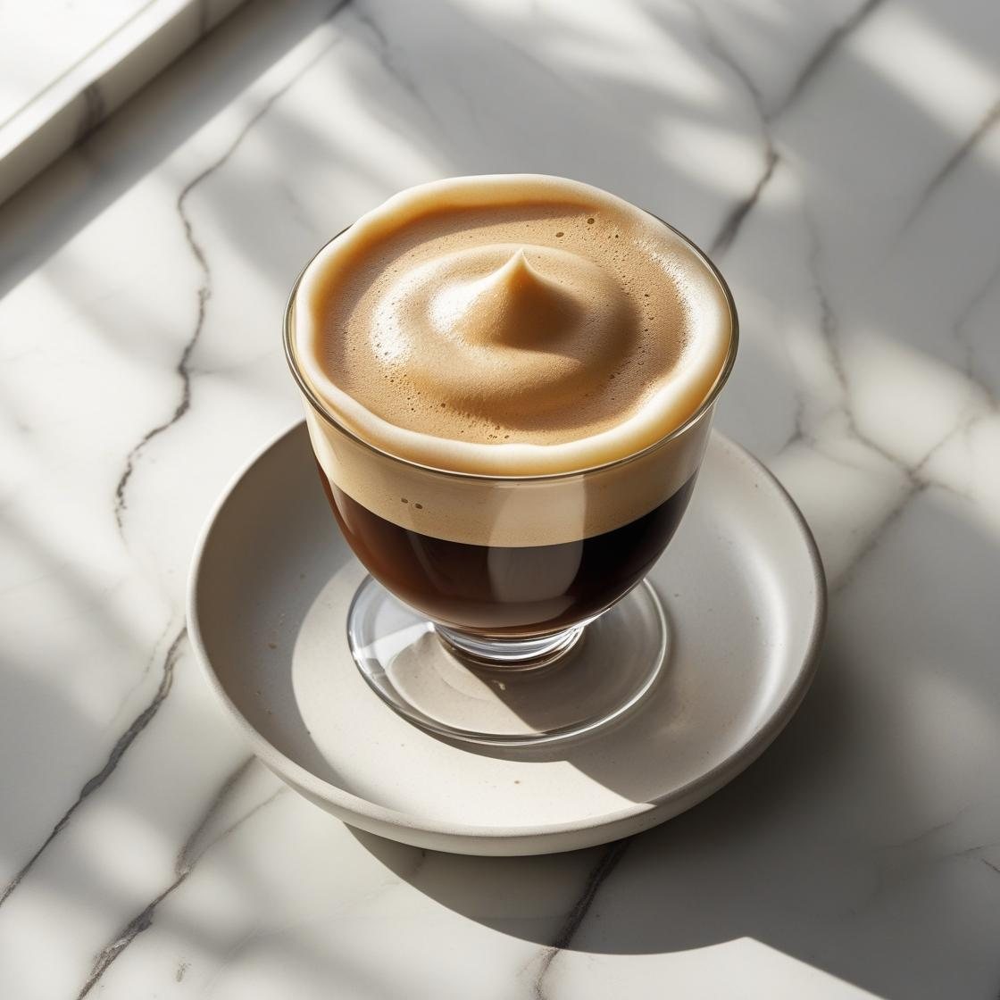

Dalgona Coffe

minuman kopi yang populer, terbuat dari kopi instan, gula, dan air panas
yang dikocok hingga membentuk busa tebal dan creamy. Busa ini kemudian
ditambahkan ke susu, baik susu dingin maupun susu hangat, menciptakan
tampilan dua lapis yang menarik.
Bahan:
- Bahan (1 gelas):
- 2 sdm kopi instan
- 2 sdm gula pasir
- 2 sdm air panas
- ±200 ml susu (dingin atau hangat) + es (opsional)s
Cara Membuat:
- Haluskan semua bumbu, lalu tumis hingga harum.
- Lumuri ayam dengan bumbu, diamkan minimal 30 menit.
-
Bakar ayam di atas bara atau teflon hingga matang dan bumbu meresap.
- Sajikan dengan nasi hangat dan sambal.
Tonton Video di YouTube
← Kembali ke Menu Minuman